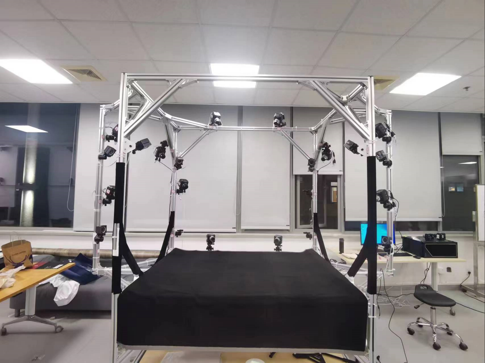
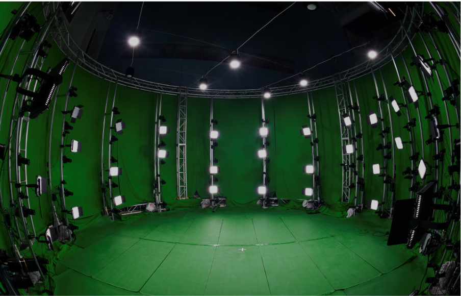
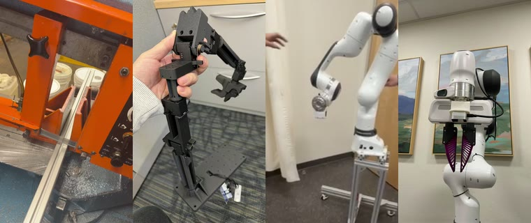

|
Juze Zhang I am currently a postdoc at Stanford University working with Prof. Ehsan Adeli, affiliated with the Stanford Vision and Learning Lab (SVL) and the Stanford Translational AI Lab (STAI). Before joining Stanford, I worked on digital humans at ShanghaiTech University, where I was fortunate to work closely with Jingyi Yu, Jingya Wang, and Lan Xu. I received my Ph.D. from the University of Chinese Academy of Sciences. I consider myself a multidisciplinary researcher who enjoys building across the full stack — hardware, systems, algorithms, and frontier multimodal frameworks. On the systems side, I maintained a multi-view dome with over 100 cameras at ShanghaiTech, built the DailyCap Studio from scratch as the first student on the project, and assembled the HOI-X Studio (12 Z-CAM + 8 OptiTrack + RealSense). I also led a small team to design wireless IMUs from scratch, embedding them into objects, clothing, and even flexible PCBs worn on the face (see Projects). On the algorithm side, my current research centers on multimodal alignment — in particular world/video models, speech LLMs, and the hardware stack for robotics. At Stanford, I built ViBES, an early exploration of the mixture-of-modality-experts (MoME) design — self-attention with modality-specific parameters and fractional embeddings on top of a speech LLM — which became a 3D conversational agent in early 2025. Encouraged by the success of this mixture-of-transformers (MoT) recipe, I then initiated OpenWAM, applying the same design to video generation in place of the speech LLM. I view this line of work as essentially sequential-transformer-to-sequential-transformer modeling. |
ResearchSelected papers are listed below (* denotes equal contribution). For the full list, please see my Google Scholar. |


{kind=link}
ProjectsBeyond papers, I love building the full stack with my hands — capture studios, sensors, and the systems that power the datasets above. |
|
DailyCap Studio: Built from Scratch
A multi-view capture studio (42 Z-CAM + 16 OptiTrack) at ShanghaiTech that I built from scratch as the first student on the project — from frame design and camera layout to synchronization, calibration, and the full capture pipeline. |
|
|
 |
HOI-X Studio
A hybrid interaction-capture rig combining side-view sensing (12 Z-CAM E2 + 8 OptiTrack) with egocentric sensing (Pupil Core eye tracker + RealSense D455) for fine-grained human-object interaction capture. |
|
 |
NeuralDome Studio: 76 Z-CAM + 16 Vicon
I maintained and operated the ShanghaiTech multi-view dome with over 100 cameras, powering large-scale human-object interaction datasets including NeuralDome (CVPR 2023) and HOI-M3 (CVPR 2024). |
|
 |
Franka FR3 Robot Arm Platform
I built a Franka FR3 manipulation platform from scratch in the lab at Stanford — fabricating the mobile stand from raw aluminum extrusions, assembling and calibrating the arm, and setting up the gripper, wrist-mounted camera, and control stack. |
|
Wireless IMU Sensors Designed from Scratch
I led a small team to design custom wireless IMUs (ESP32/Nordic + 9-axis sensing over Bluetooth/Wi-Fi), embedded into objects and clothing — including a flexible-PCB version thin enough to be worn directly on the face for facial capture. |